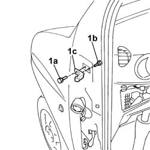
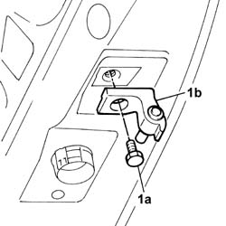

7005A24 front side door r r
- Path
- Procedures > 70 FITTINGS > 7005 PASSENGER COMPARTMENT FRONT SIDE DOORS > 7005A front side door assembly > 7005A24 front side door r r
- Kind
- repair procedure (removal / refitting; the operation number is the code)
- Applies to
- all engines; all production periods
- Interactive page
- https://sloeber94.github.io/elrnDB-fDbl/en/#/2584986
Applies to: all engines; all production periods
 Removing
Removing
 Refitting
RefittingOp. 5570T90 FRONT SPEAKER (ONE), LEFT OR RIGHT - R.R
1. Undo the outer bolt (1a), door side, and inner bolt (1b), dashboard side, and remove the top and bottom fixed hinge (1c).

Applies to: all engines; all production periods
1. Undo the bolt (1a) and remove the moving hinge (1b) on the door.

Applies to: all engines; all production periods
Refitting
RemovingFit the moving hinge on the door and tighten the fixing bolt.
Fit the top and bottom fixed hinges and secure them with their bolts.